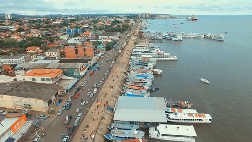

00:00:09.610
Vista aérea da cidade junto ao rio. A avenida da orla corre ao lado de uma fileira de embarcações atracadas.
Orla de Santarém, Santarém (PA) · confirmado
A abertura apresenta a frente fluvial da cidade e a concentração de barcos na margem.
Transcrição · Sem marca de fala aplicável
Turismo Aqui — quadro de vídeo publicado no YouTube